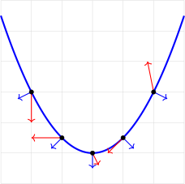

Consider the collection of points \[\{(s, t, s^2-t): s\in[-3,3], t\in [-3,3] \}.\]
If \(t=0\) what is the curve parameterized by \(s\)?
If \(t=1\) what is the curve parameterized by \(s\)?
If \(t=-1\) what is the curve parameterized by \(s\)?
What shape do these points form?
Consider the collection of points \[\{(s, t, s^2-t): s\in[-3,3], t\in [-3,3] \}.\]
Consider the collection of points \[(t, \sqrt{t}\cos(s), \sqrt{t}\sin(s)): s\in[0,2\pi], t\in [0,9] \}.\]
If \(t=1\) what is the curve parameterized by \(s\)?
If \(t=4\) what is the curve parameterized by \(s\)?
If \(t=9\) what is the curve parameterized by \(s\)?
What shape do these points form?
Consider the collection of points \[(t, \sqrt{t}\cos(s), \sqrt{t}\sin(s)): s\in[0,2\pi], t\in [0,9] \}.\]
Consider the collection of points \[ (3+\cos(t))\cos(s), (3+\cos(t))\sin(s), \sin(t) ): s\in[0,2\pi], t\in [0,2\pi] \}.\]
If \(s=0\) what is the curve parameterized by \(s\)?
If \(s=\frac{\pi}{2}\) what is the curve parameterized by \(s\)?
If \(s=\pi\) what is the curve parameterized by \(s\)?
What shape do these points form?
Consider the collection of points \[ (3+\cos(t))\cos(s), (3+\cos(t))\sin(s), \sin(t) ): s\in[0,2\pi], t\in [0,2\pi] \}.\]
Consider the surface \[x=9-x^2-z^2, x\geq0.\] What is a parameterization for this surface?
Test it out!
RECALL: The Jacobian \( \left( \left\langle \frac{\partial x}{\partial u}, \frac{\partial y}{\partial u}, 0 \right\rangle \times \left\langle \frac{\partial x}{\partial v}, \frac{\partial y}{\partial v}, 0 \right\rangle \right) \) measure the "size" of the transformation from \(uv\) to \(st\) coordinates.
This measures the size of a \(d_u\times d_v\) rectangle after mapping it to the \(xy\)-plane.
What measures the size of a \(d_s\times d_t\) rectangle after mapping it to the \(xyz\)-space?
Let \(X:\mathbb{R}^2\to\mathbb{R}^3\) be \(C^1\). Then the surface area of the surface \(S\) defined by \(X(s,t), s_0\leq s \leq 1, t_0\leq t \leq t_1\) is determined by: \[\iint_{[s_0, s_1]\times [t_0, t_1]} \|T_s(s,t)\times T_t(s,t)\| dsdt\]
If \(N(s,t):= T_s(s,t)\times T_t(s,t) \) and \(X(s,t)=(x(s,t), y(s,t), z(s,t))\) then: \[\|N(s,t)\| = \sqrt{ \left( \frac{\partial(x, y)}{\partial(s,t)}\right)^2 + \left( \frac{\partial(x, z)}{\partial(s,t)}\right)^2 +\left( \frac{\partial(y, z)}{\partial(s,t)}\right)^2 }\]
Let \(f:\mathbb{R}^3\to \mathbb{R}\). Then the integral of \(f\) over the surface \(X(s,t), s_0\leq s \leq 1, t_0\leq t \leq t_1\) is determined by: \[\iint_{[s_0, s_1]\times [t_0, t_1]} f(X(s,t)) \|T_s(s,t)\times T_t(s,t)\| dsdt \]\[= \iint_{[s_0, s_1]\times [t_0, t_1]} f(X(s,t)) \|N(s,t)\| dsdt\]
Integrate \(f(x,y,z)=z^3\) over the sphere \(X(s,t) = (2\cos(s)\sin(t), 2\sin(s)\sin(t), 2\cos(t)), s\in [0, 2\pi], t\in[0,\pi]\).
What is \(N(s,t)\)?
Consider a "surface" and its normal vectors. How can we find much of the vector field "leaks out" of the surface?
Let \(F:\mathbb{R}^3\to \mathbb{R}^3\) be a vector field. Then the vector surface integral of \(F\) over the surface \(X\) is determined by: \[ \iint_X F\cdot dS = \iint_{[s_0, s_1]\times [t_0, t_1]} F(X(s,t)) \cdot N(s,t) dsdt.\]
Integrating the circulation density over a region is the same as integrating around the boundary.
Integrating the "circulation density" over a surface is the same as integrating around the boundary.
\[ \iint_S \nabla \times F\cdot dS = \oint_{\partial S} F\cdot ds. \]
\[ \iint_S \nabla \times F\cdot N(s,t) dsdt = \oint_{\partial S} F(x(t))\cdot x'(t)dt. \]